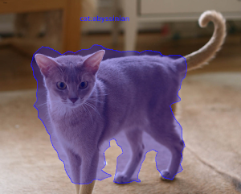
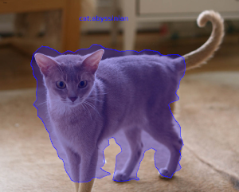

MMDetection is a comprehensive and flexible framework not only for object detection, but also for instance segmentation. Custom docker images with additional tools are available from here:
https://github.com/waikato-datamining/mmdetection
Prerequisites
Make sure you have the directory structure created as outlined in the Prerequisites.
Data
In this example, we will use the Oxford Pets dataset, which consists of 37 different categories of cats and dogs.
Download the dataset from the following URL into the data directory and extract it:
https://datasets.cms.waikato.ac.nz/ufdl/data/oxford-pets/oxford-pets-adams.zip
Rename the adams directory to pets-adams.
To speed up training, we only use two labels: cat:abyssinian and dog:yorkshire_terrier.
The label filtering and splitting it into train, validation and test subsets is done
using wai.annotations:
docker run -u $(id -u):$(id -g) \
-v `pwd`:/workspace \
-t waikatoufdl/wai.annotations:latest \
wai-annotations convert \
from-adams-od \
-i "/workspace/data/pets-adams/*.report" \
filter-labels \
--labels cat:abyssinian dog:yorkshire_terrier \
discard-negatives \
coerce-mask \
to-coco-od \
-o /workspace/data/pets2-coco-split/annotations.json \
--sort-categories \
--category-output-file labels.txt \
--split-names train val test \
--split-ratios 70 15 15
Training
For training, we will use the following docker image:
waikatodatamining/mmdetection:2.24.1_cuda11.1
The training script is called mmdet_train, for which we can invoke the help screen as follows
(unfortunately, we need to set the MMDET_CLASSES environment variable to avoid an exception):
docker run \
-e MMDET_CLASSES= \
-t waikatodatamining/mmdetection:2.24.1_cuda11.1 \
mmdet_train --help
It is good practice creating a separate sub-directory for each training run, with a directory name that hints at
what dataset and model were used. So for our first training run, which will use mainly default parameters, we will
create the following directory in the output folder:
pets2-mmdet-maskrcnn
Before we can train, we will need to obtain and customize a config file. Within the container, you can find example configurations for various architectures in the following directory:
/mmdetection/configs
Using the mmdet_config command, we can expand and dump one of these configurations for our
own purposes:
docker run \
-u $(id -u):$(id -g) \
--gpus=all \
-v `pwd`:/workspace \
-v `pwd`/cache:/.cache \
-v `pwd`/cache/torch:/.cache/torch \
-t waikatodatamining/mmdetection:2.24.1_cuda11.1 \
mmdet_config \
/mmdetection/configs/mask_rcnn/mask_rcnn_r50_fpn_1x_coco.py \
> output/pets2-mmdet-maskrcnn/mask_rcnn_r50_fpn_1x_coco.py
Open the mask_rcnn_r50_fpn_1x_coco.py file in a text editor and perform the following operations:
- remove any lines before
model = dict( - change all occurrences of
num_classesto 2 - change
dataset_typetoDatasetand any occurrences oftypein thetrain,test,valsections of thedatadictionary - change
data_rootoccurrences to/workspace/data/pets2-coco-split(the directory above thetrainandvaldirectories) - change
img_prefixoccurrences toimg_prefix=data_root+'/DIR',withDIRbeing the appropriatetrain,valortest - change
ann_fileoccurrences toann_file=data_root+'/DIR/annotations.json',withDIRbeing the appropriatetrain,valortest - change
max_epochsinrunnerto an appropriate value, e.g., 50 - change
intervalincheckpoint_configto a higher value, e.g., 5 - change
lr(learning rate) inoptimizerto0.002to avoid NaNs with a learning rate that is too high
Kick off the training with the following command:
docker run \
-u $(id -u):$(id -g) \
--shm-size 8G \
--gpus=all \
-v `pwd`:/workspace \
-v `pwd`/cache:/.cache \
-v `pwd`/cache/torch:/.cache/torch \
-e MMDET_CLASSES=/workspace/data/pets2-coco-split/train/labels.txt \
-t waikatodatamining/mmdetection:2.24.1_cuda11.1 \
mmdet_train \
/workspace/output/pets2-mmdet-maskrcnn/mask_rcnn_r50_fpn_1x_coco.py \
--work-dir /workspace/output/pets2-mmdet-maskrcnn
Predicting
Using the mmdet_predict script, we can batch-process images placed in the predictions/in directory
as follows (e.g., from our test subset):
docker run \
-u $(id -u):$(id -g) \
--shm-size 8G \
--gpus=all \
-v `pwd`:/workspace \
-v `pwd`/cache:/.cache \
-v `pwd`/cache/torch:/.cache/torch \
-e MMDET_CLASSES=/workspace/data/pets2-coco-split/train/labels.txt \
-t waikatodatamining/mmdetection:2.24.1_cuda11.1 \
mmdet_predict \
--checkpoint /workspace/output/pets2-mmdet-maskrcnn/latest.pth \
--config /workspace/output/pets2-mmdet-maskrcnn/mask_rcnn_r50_fpn_1x_coco.py \
--prediction_in /workspace/predictions/in \
--prediction_out /workspace/predictions/out
Notes
- The predictions get output in ROI CSV format.
- You can view the predictions with the ADAMS Preview browser and, e.g., the ObjectLocationsFromSpreadSheet
handler. You need to configure this generic handler via the
...button, entering the columns for the bounding box (x0,y0,x1,y1), the polygon coordinates (poly_xandpoly_y) and the label (label_str) of thereader(ObjectLocationsSpreadSheetReader).
Example prediction
 
